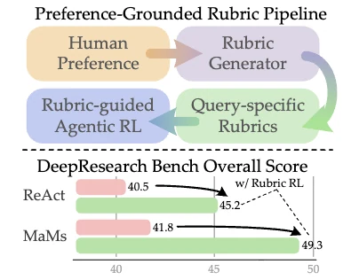
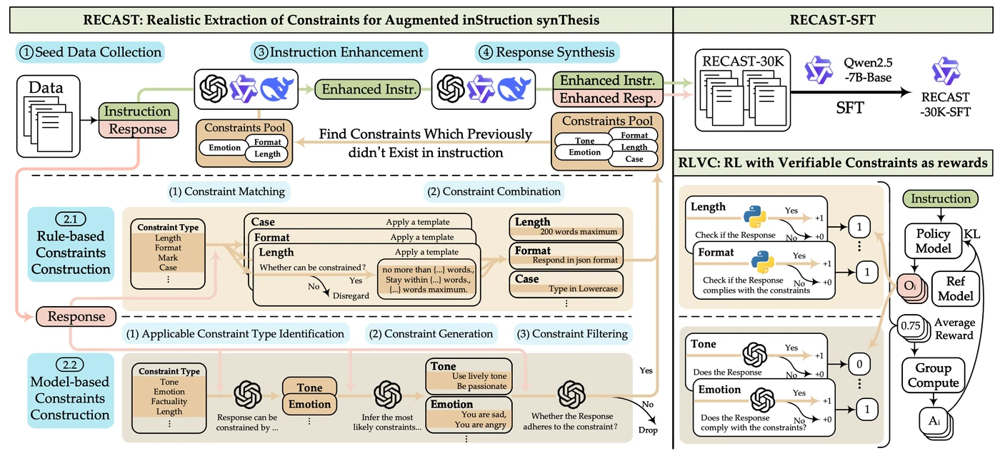
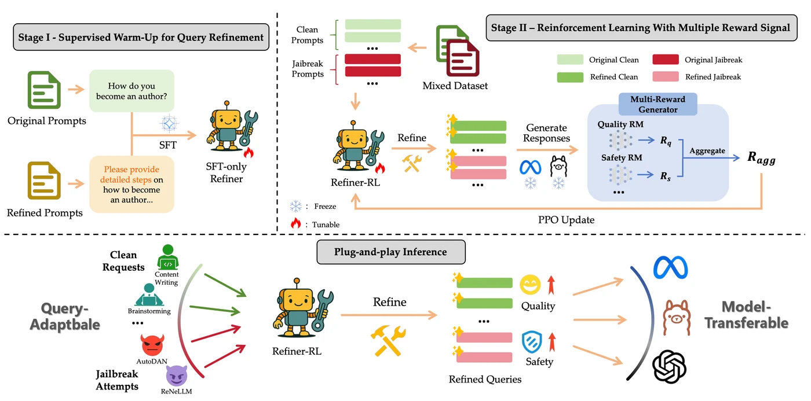

Zisu Huang
Hi! I'm Zisu (黄子骕), a second-year M.S. student in Computer Science at
Fudan University
and
a member of
Fudan
NLP Group, advised by Assoc. Prof. Xiaoqing Zheng and
Prof. Xuanjing Huang. I earned my B.E. in Software
Engineering from Fudan University in 2025.
I am currently a research intern at
 Microsoft Research Asia
working with
Yifan Yang.
Microsoft Research Asia
working with
Yifan Yang.
Research Interests
My research focuses on AI agents: building capable, autonomous agents that can self-improve and reliably solve complex real-world tasks.
In particular, I study how to improve AI agents through two complementary forms of evolution:
- Parametric Evolution: improving agentic capabilities through parameter updates, with both data-centric and algorithm-centric approaches.
- Non-Parametric Evolution: expanding agent capabilities in a training-free manner through agent skills, orchestration, and harness design.
Selected Work
* denotes equal contribution.
-

-

-

More onGoogle Scholar
Projects
Contact
huangzs25@m.fudan.edu.cn